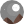
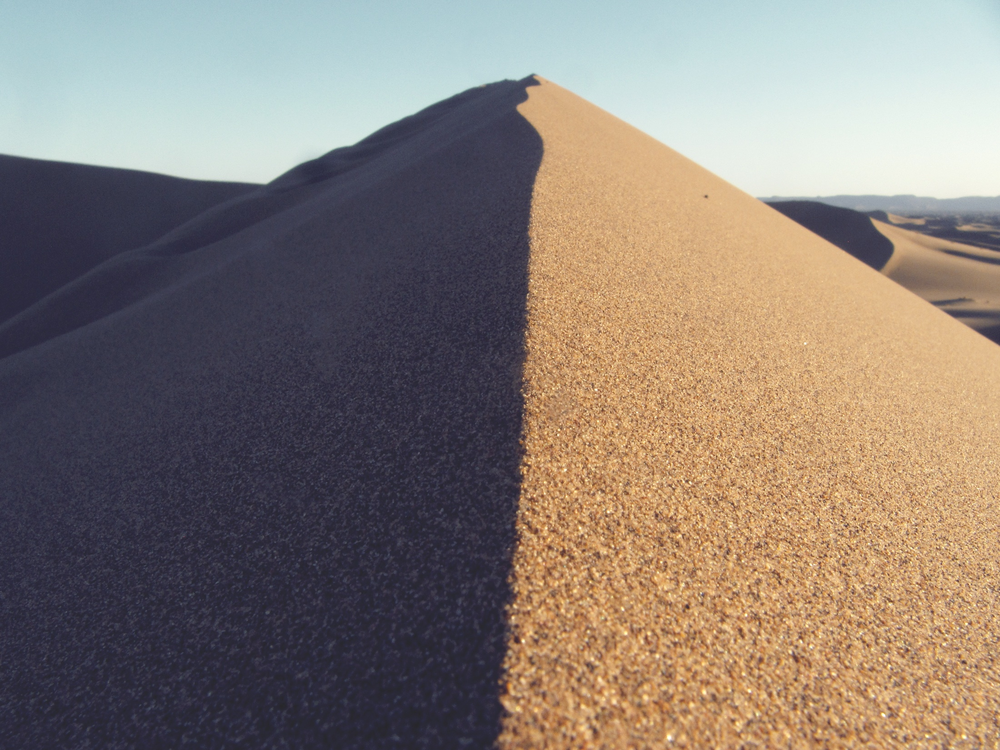

Morocco: You'll It
From Saharan dunes to the peaks of the High Atlas, Morocco
could have beenis tailor-made for travellers. Lyrical landscapes carpet this slice of North Africa like the richly coloured and patterned rugs you’ll lust after in local cooperatives. The mountains – not just the famous High Atlas but also the Rif and suntanned ranges leading to Saharan oases – offer simple, breathtaking pleasures: night skies  glistening in the thin air, and views over a fluffy cloudbank from the Tizi n’Test pass. On lower ground, there are rugged coastlines, waterfalls and caves in forested hills, and the mighty desert .
- 